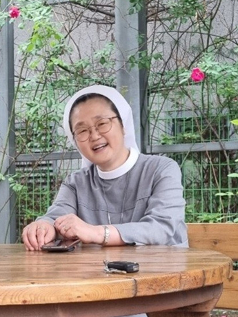

예수님께서는 그 아이들을 가까이 불러 놓고 이르셨다. “어린이들이 나에게 오는 것을 막지 말고 그냥 놓아두어라. 사실 하느님의 나라는 이 어린이들과 같은 사람들의 것이다. 내가 진실로 너희에게 말한다. 어린이와 같이 하느님의 나라를 받아들이지 않는 자는 결코 그곳에 들어가지 못한다.” (루카 18,16-17)
위에 말씀 안에는 얼마나 예수님께서 어린이들을 사랑하시고 귀하게 여기시는지를 알 수 있습니다.
그러나 이 말씀은 어른과 어린이의 구분만이 아닌
예수님께 가까이 갈 수 있고 마음으로 하느님 나라를 살아갈 수 있는 그런 마음.
하느님 나라를 의심 없이 온전히 차지할 수 있는 그런 말씀 이라 묵상 되어 집니다.
"어린이처럼"이란 성가의 구절에서도 알 수 있습니다.
"잘못을 깨친 어린이처럼 용서 받을 확신을 갖고 주님께 나와 무릎을 끓고 모든 고백하리라. 하느님 보소서 천진한 어린이처럼 티 없이 기쁘게 주님께 왔나이다."
예수님께서 좋아하시고 즐겨 하시는 마음은 이런 게 아닐까 생각합니다. 온전히 믿고 따르는 어떤 두려움과 걱정, 계산할 줄 모르는 완전한 믿음입니다.